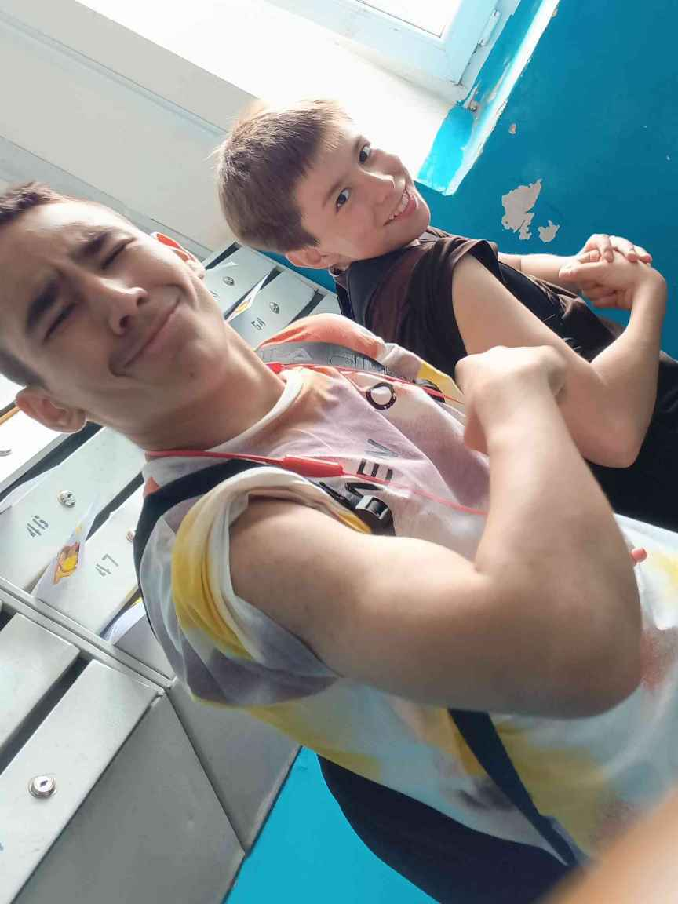
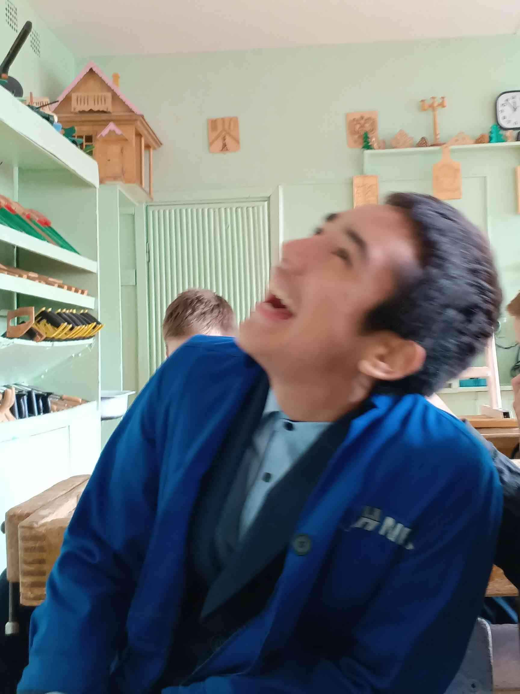
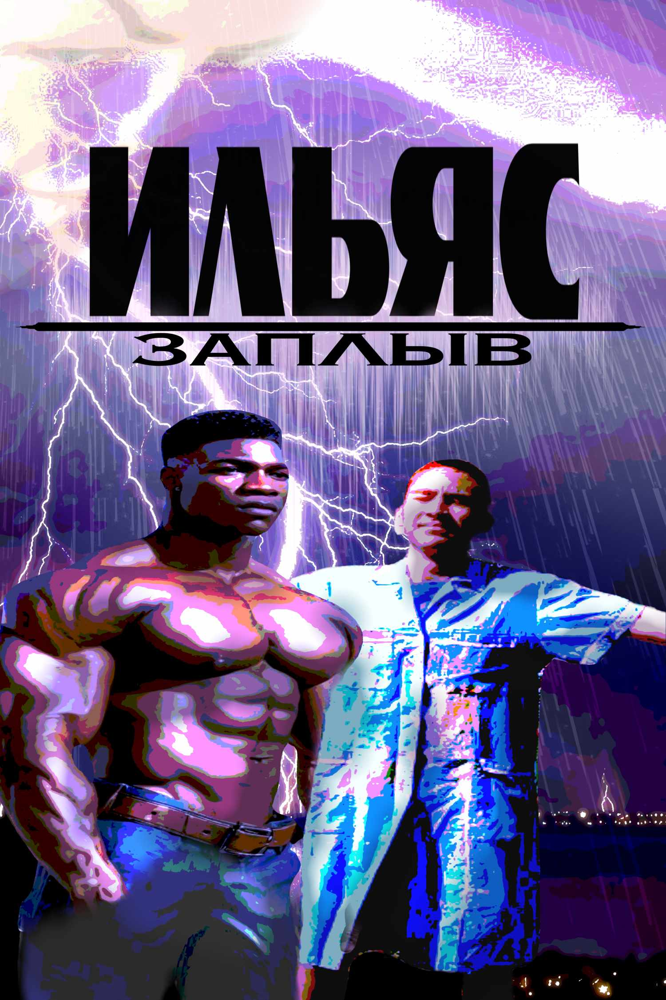

лор ильяса
Ильяс это машина, бля первое фото было сделано 7 июня 24 года. Родился в семье Нигерийского короля и с самого детства был окружен любовью заботой и 5 литрами чистой воды. В возрасте 10 лет без знания русского языка он переехал в Россию для учёбы. Благодаря своей упорности и стремлению к знаниям быстро освоил язык и сдал устный русский на 13 баллов


Вдохновленный великими африканскими лидерами, такими как
После завершения 9 класса в России, Ильяс вернется в Африку
Ильяс успешный игрок в онлайн-казино, зарабатывая миллионы на ставках он помогает бедным регионам Африки, но эти миллионы с минусом в начале
скверно, но зато верно

Скоро
во всех кинотеатрах россии и нигерии
ОФИЦИАЛЬНОЕ ПРЕДУПРЕЖДЕНИЕ:
фильм "ИЛЬЯС Заплыв" содержит сцены,
способные вызвать:
эмоциональную нестабильность,
кратковременную потерю мотивации,
желание резко изменить свою жизнь
и уважение к африканской экономике.
Все события фильма были восстановлены
международной командой историков,
аналитиков,
бывших игроков в пабг
и человека,
который вроде родился там.
Создатели фильма предупреждают:
после просмотра у зрителя может появиться
ложное ощущение,
что он способен:
открыть собственный бизнес,
стать лидером континента,
поднять экономику,
выучить русский за неделю
или вернуть деньги с казино.
Отдельные сцены фильма были запрещены
в 143 странах мира,
двух шаурмичных
и у ильяса дома.
Причины запрета до сих пор неизвестны.
Во время производства фильма использовались:
39 литра энергетика,
17 motivational shorts,
африканская философия,
капкут
и один микрофон
со сломаным шнуром.
Все трюки выполнялись профессионалами.
Не пытайтесь повторить:
прыжок в 5 литров воды,
инвестиции после полуночи,
разговоры о бизнесе после двух проебанных каток.
Из-за высокого уровня драматизма
некоторые сцены пришлось смягчить.
В оригинальной версии фильма
Ильяс смотрел мотивационные видео
14 часов подряд
и пытался создать международную корпорацию,
используя только заметки телефона
и слово стартап.
ВНИМАНИЕ:
в фильме присутствуют скрытые смыслы,
скрытые надписи,
скрытые конфликты,
скрытые долги
и скрытые спан элементы.
После просмотра фильма
рекомендуется:
выпить воды,
посмотреть в окно,
вспомнить свои жизненные решения
и не принимать важных финансовых решений
под фонк
Создатели фильма официально заявляют,
что образ Ильяса является
художественным преувеличением.
Фильм создан при поддержке:
автора и
фонда африканских технологий.
При обнаружении сюжетных дыр
рекомендуется не задавать вопросов.
Это часть авторского замысла.